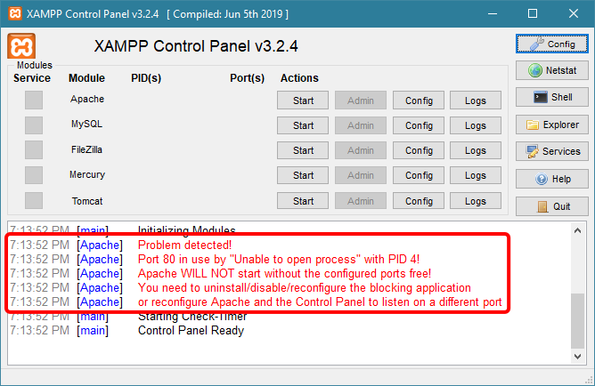
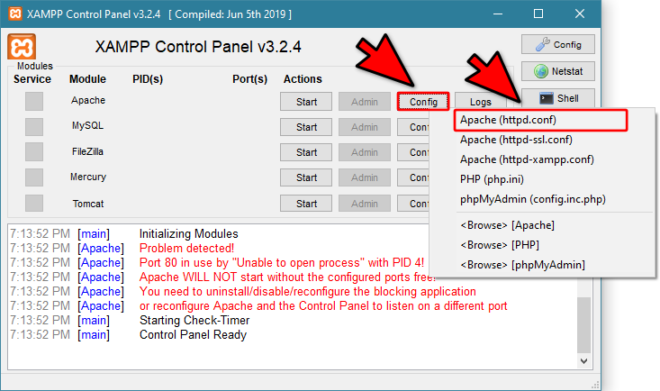
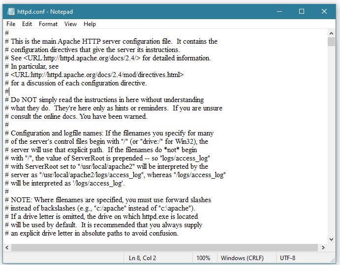
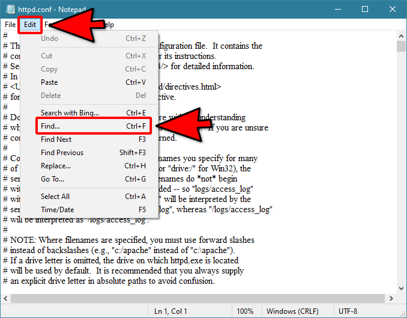
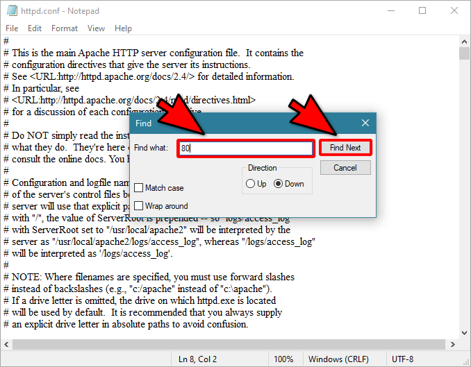
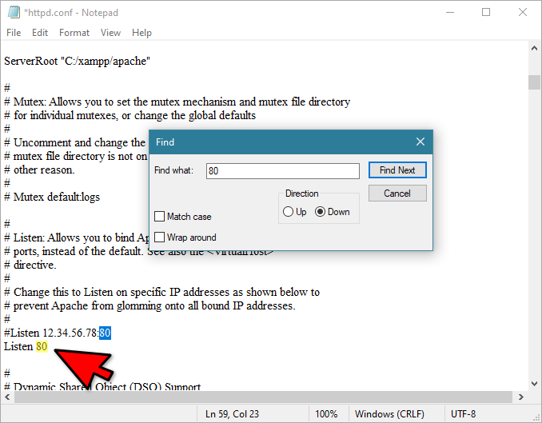
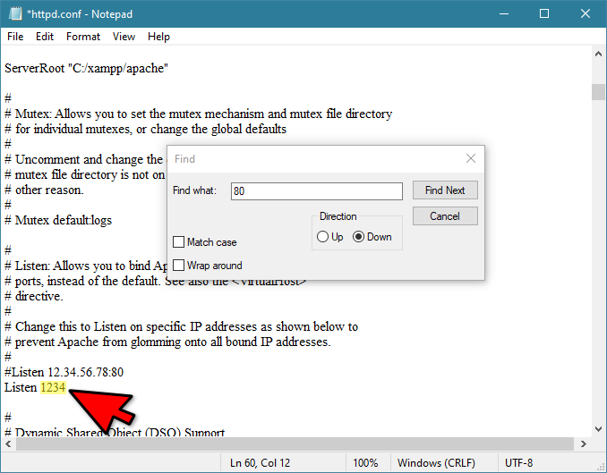
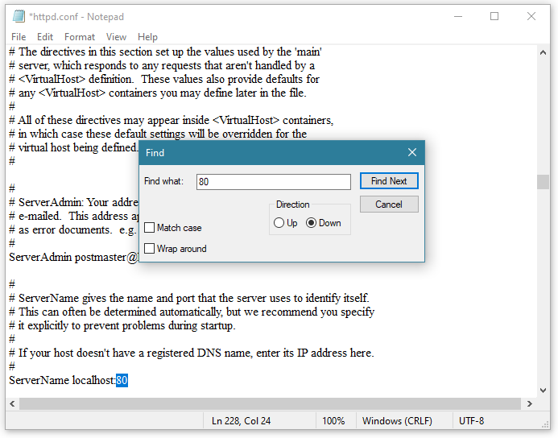
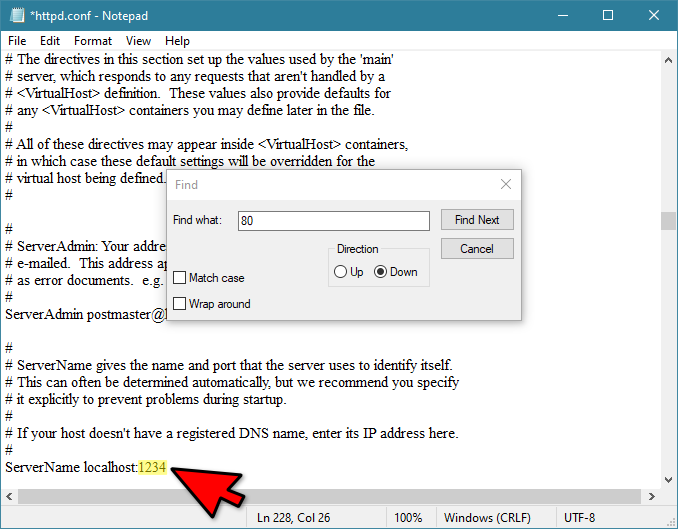
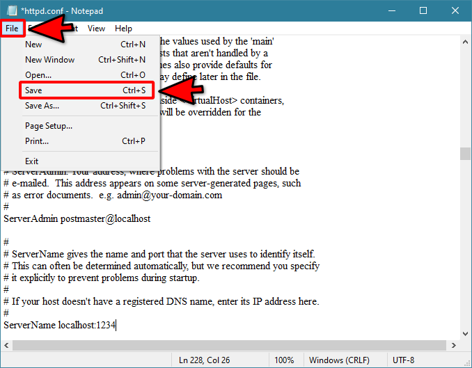

SQLتغيير رقم بورت Apache
سبب الحاجة لتغيير رقم بورت Apache
أي تطبيق يستخدم النت أو يقدم خدمة تعمل عبر شبكة النت أو شبكة داخلية ضمن الحاسوب يحتاج أن يستخدم منفذ من المنافذ التي يوفرها نظام التشغيل حتى يمرر البيانات عبر هذا المنفذ.
معلومة: المنفذ أو البورت ( Port ) في عالم المعلوماتية و هو مجرد رقم عادي يستخدم للتفرقة بين الخدمات و البرامج التي تعمل عبر النت.
في برنامج XAMPP سنستخدم خدمة phpMyAdmin لكتابة أي أمر من أوامر SQL أو للتعامل مع قواعد البيانات بشكل مباشر.
خدمة phpMyAdmin هي في الأساس عبارة عن موقع إلكتروني - صفحة ويب - تفتحها بواسطة المتصفح و هذا الشيء ستتعلمه بعد قليل.
الذي يسمح لخدمة phpMyAdmin أن تعمل هو خادم إسمه Apache و هذا ما يحتاج رقم بورت خاص به حتى يعمل.
الفكرة التي نريد قولها من كل هذا الكلام أن خدمة phpMyAdmin حتى تعمل, تحتاج أن يكون الخادم الذي يمكنه تشغيلها ( أي Apache ) يستخدم أحد المنافذ المتوفرة في نظامك مع الإشارة إلى أن الرقم الإفتراضي الذي يحاول أن يستخدمه Apache هو الرقم 80.
من المشاكل التي قد تظهر لك من لحظة فتح برنامج XAMPP هي أن الخادم Apache لا يمكن أن يعمل على البورت رقم 80 تماماً كما ظهر لنا عند فتح برنامج XAMPP.

سبب عدم قدرته على العمل على هذا البورت هو أنه يوجد برنامج آخر في حاسوبك يستخدم هذا البورت, فمثلاً قد يكون برنامج Skype أو SQL Server أو برنامج آخر موجود على حاسوبك يستخدم هذا البورت.
لهذا السبب سنقوم بتغيير رقم البورت الإفتراضي الذي يستخدمه برنامج phpMyAdmin إلى الرقم 1234 لأنه لا يوجد أي برنامج على الأرجح يستخدم هذا الرقم.
طريقة تغيير رقم بورت الخادم Apache
سواء ظهر لك أن الرقم 80 يستخدم من قبل برنامج آخر أم لم يظهر, يمكنك تغيير رقم البورت كما سنفعل.
لذا إن لم تظهر لك أي مشكلة سببها رقم البورت, يمكنك عدم إجراء الخطوات التي وضعناها.
لتغير رقم البورت الذي سيعمل عليه الخادم Apache إتبع الخطوات التالية:
على نفس السطر الموجود عليه كلمة Apache أنقر على كلمة Config و من ثم إختر كلمة Apache (httpd.conf).

سيفتح لك الملف httpd.conf بشكل تلقائي بواسطة محرر Notepad أو بواسطة أي محرر إفتراضي تستخدمه أنت.
لا تفعل أي شيء هنا و انتقل للخطوة التالية.

في القائمة العلوية أنقر على Edit ثم إختر Find.

الآن يطلب منك إدخال الشيء الذي تريد البحث عنه. نحن نريد البحث عن كل رقم 80 موجود في هذا الملف و تبديله بالرقم 1234.
لذا قم بإدخال الرقم 80 ثم أنقر Find Next.

هذا أول رقم 80 يستخدمه برنامج Apache تم إيجاده و الذي يجب أن نبدله بالرقم 1234.
ملاحظة: الصورة التالية توضح كيف أصبح بعد التبديل.

السطر #Listen 12.34.56.78.78:80 لا داعي لتعديل أي رقم فيه لأنه مجرد شرح موضوع للمبرمجين الذي يريدون إجراء تعديلات على الملف لذا تهتم به.
السطر الذي كان مكتوب فيه Listen 80 قمنا بتغيير إلى Listen 1234.

أنقر Find Next مرة أخرى حتى تجد ثاني رقم 80 موضوع في هذا الملف.
قم بتبديل الرقم 80 بالرقم 1234.
ملاحظة: الصورة التالية توضح كيف أصبح بعد التبديل.

السطر الذي كان مكتوب فيه ServerName localhost:80 قمنا بتغيير إلى ServerName localhost:1234.

بعد تبديل كل أرقام البورتات, قم بالنقر على أنقر File ثم Save لحفظ التعديلات التي قمت بإجراءها.

قم بإغلاق الملف httpd.conf لأنه لا داعي لأن يظل مفتوحاً, ثم إرجع إلى الدرس للتعلم كيف تقوم الآن بتشغيل الخادم Apache و خدمة phpMyAdmin.

 محرر الويب
محرر الويب نظام الألوان
نظام الألوان محول الوحدات
محول الوحدات محلل عناوين الشبكات
محلل عناوين الشبكات